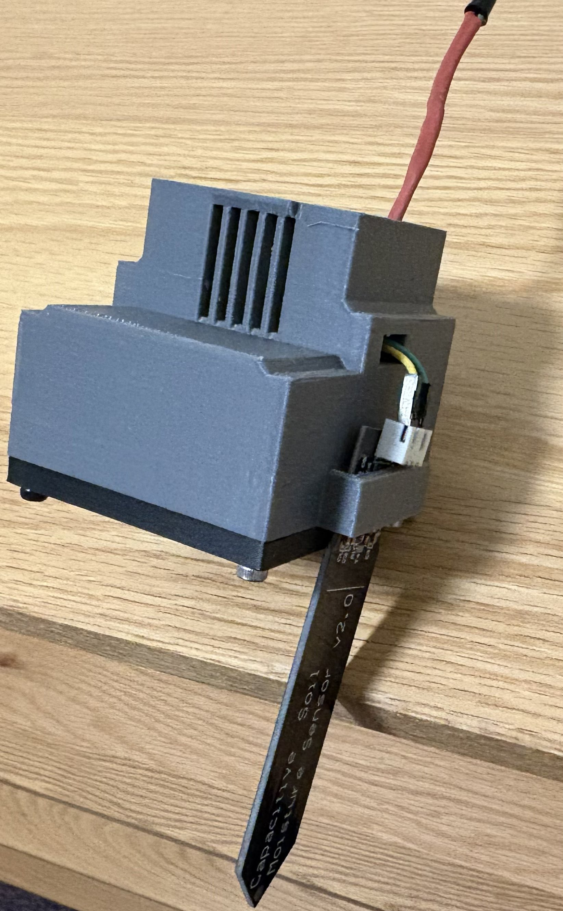
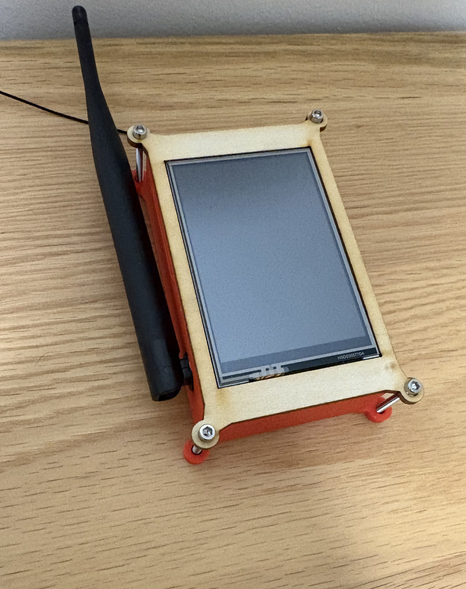
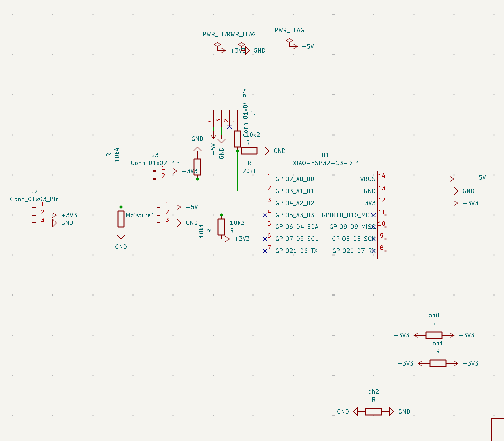
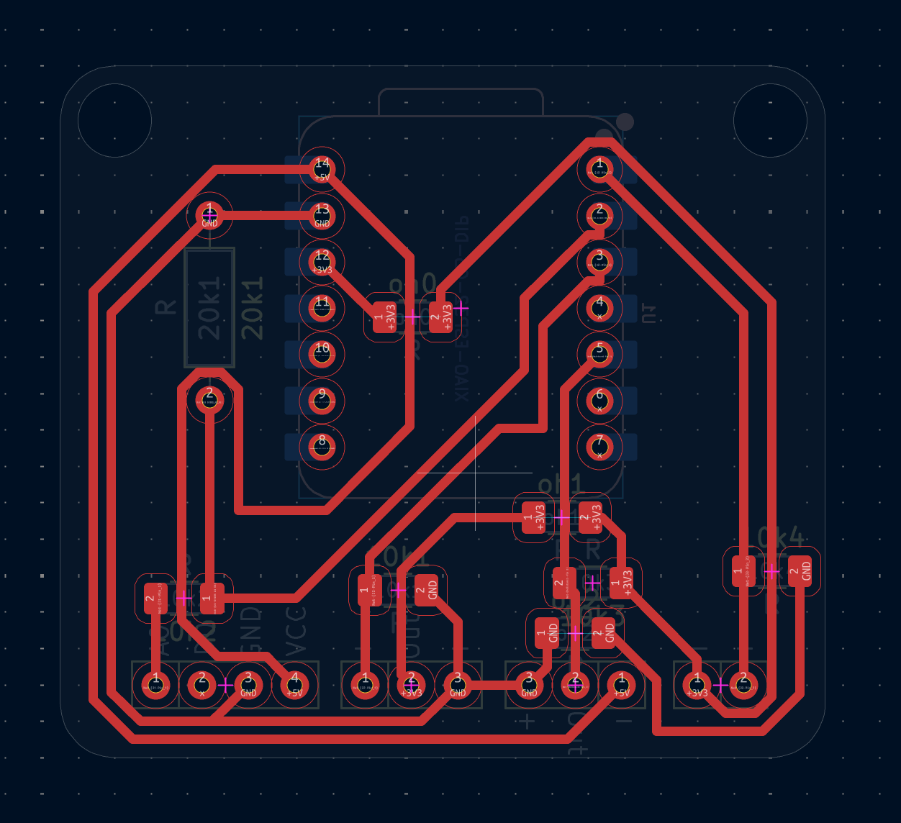
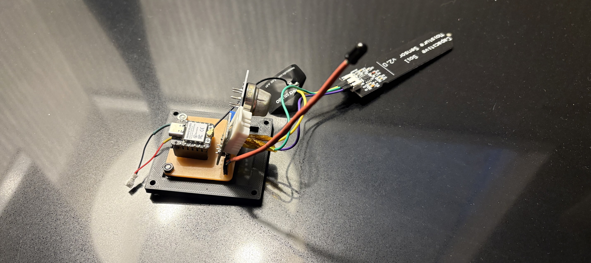
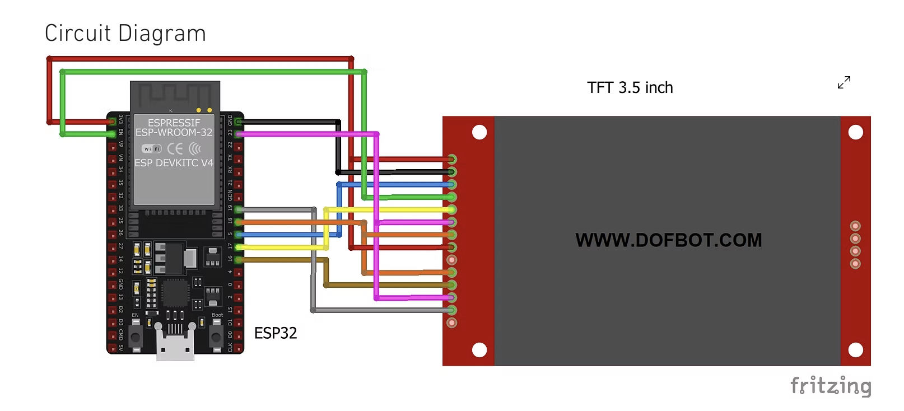

My project is a forest fire sensor network. It creates a mesh of sensor nodes that detect and track the main factors that lead to forest fires, sending that data to a centralized host where it can be viewed and analyzed by scientists to better understand the causes of specific fires in an area. Each node uses a DHT22, an MQ135 gas sensor, a photo IR transistor, and a capacitive soil sensor to track humidity, soil moisture, temperature, CO2 percentage, and sunlight levels in the forest.


By Tuesday's check-in the sensor module was fully done. Enclosures for both the sensor unit and display host are printed, assembled, and housing everything cleanly. What's still left is getting the mesh network up so multiple nodes can relay data across a wide area, building out a proper touch-screen menu on the display, and moving the screen wiring off the breadboard onto a soldered protoboard for a cleaner, more reliable build.
[ Add enclosures content here ]
Click and drag to rotate | Scroll to zoom | Right-click drag to pan
The process for creating this enclosure spanned a total of three days and five separate prototypes, each an improvement upon the last. The first step was determining the general shape and size of the enclosure. To narrow it down, I decided to base it on the shape of my PCB. The PCB was developed alongside the enclosure and was therefore also the reason for some of the main design changes.
The first prototype of the PCB was circular, and so the first concept for the enclosure was a cylinder. At first this worked, the PCB fit fairly snugly inside and all sensors seemed to fit, but once fully printed, one major problem arose: how to accurately create holes and spaces for the sensors to protrude through while designing on a circular form, without the ability to properly transfer dimensions between the PCB design files, the real-world sensor sizes, and the Fusion 360 STL files. A round shape introduced too many variables that could only be resolved through repeated trial and error. I reached a crossroads: continue with a circular design or switch to a square one. I chose a square design with mounting holes in the corners.
For the second iteration, I took a step back and split the enclosure into three parts: the floor where the PCB would be mounted, the shell that would protect the PCB, and the mounting system joining both together. For the floor, I designed a simple square with a divot where the PCB could sit, matching the exact outline of the PCB so it could be pressure-held in place. Once printed, everything fit, but the clearance modelled in CAD was too large and the PCB would simply fall out. To fix this, I drilled holes with a drill press and used them as mounting points, securing the floor and PCB together with screws.
To create the shell, I first measured the height and width of the fully assembled PCB with all modules attached, then laser cut a square and mounted it over the floor with the PCB inside. I drew directly onto the wood where material could be removed, going from a cube-shaped shell to one that closely followed the PCB profile. I then modelled this shape in CAD and printed it. It worked, but there were issues to address: several sensors required airflow, and a fully sealed enclosure prevented them from working correctly. I added a grate to allow air in, but this introduced a new problem: rain. To solve this, I added an overhang over every vent to prevent water from falling directly in. This completed the second prototype.
However, wind-driven rain remained a problem. I first tried making the vent holes smaller, but this restricted airflow too much and caused the CO2 sensor to interfere with the humidity sensor, making the third prototype unusable. I ultimately settled on chamfering the bottom of each vent so that any water pooling on the vents would flow outward along the rim rather than into the enclosure. This resolved the issue.
The final problem was connecting the floor and shell. I settled on screws, which required embedding nuts into the walls and increasing wall thickness, making the fourth prototype obsolete. After the final reprint, everything worked and the enclosure was complete.
For the PCB, I went through three separate prototypes in total. One was due to enclosure issues, which have already been covered in the previous section. The remaining two were the result of wiring issues, which I will address here.
My first PCB appeared to bring together everything I needed for the project, but there were significant communication issues between the sensors and the Xiao that made it unviable. When designing the PCB I decided to skip the breadboard prototyping stage, as I felt the wiring inconsistencies with the contacts would be counterproductive to the design process. I used KiCad as my PCB design software. The first step was the schematic wiring: I wired the gas sensor to D1, the humidity sensor to D0, the IR sensor to D2, and the capacitive soil sensor to D3. At first everything appeared to work, but after closer inspection the humidity sensor was not functioning and I could not determine why. After reviewing the datasheet without finding anything obviously wrong, I consulted an Adafruit breakdown of the DHT sensor and discovered that it needed to be connected to a digital pin rather than an analog one, and required a specific library to operate correctly. I updated the wiring to connect the DHT sensor to the D4 pin and adjusted the code accordingly.



Download forest_sensor_node.ino
AI was used to create templates for the code and debugging, but not for any direct coding.
#include "painlessMesh.h"
#include <ArduinoJson.h>
#include "DHT.h"These are the libraries included with the sensor node code. painlessMesh is the library that enables the mesh network, extending the ESP-NOW communication system to allow mesh creation across multiple nodes, similar to a Wi-Fi mesh. The ArduinoJSON library allows the microcontroller to parse and work with JSON, improving memory usage and allocation within the device. The DHT library enables the microcontroller to communicate with the DHT temperature and humidity sensor.
String nodeName;
static String deriveNodeName() {
#ifdef NODE_NAME_OVERRIDE
return String(NODE_NAME_OVERRIDE);
#else
uint64_t mac = ESP.getEfuseMac();
char buf[20];
snprintf(buf, sizeof(buf), "sensor-%02x%02x%02x",
(uint8_t)(mac >> 16), (uint8_t)(mac >> 8), (uint8_t)mac);
return String(buf);
#endif
}The code retrieves the MAC address from the Xiao ESP32, an address that never changes, then uses the last few digits to generate a unique name for the node. This ensures the display host has a name to show for each node, allowing the user to understand which data is coming from which sensor unit.
#define MESH_SSID "sensorMesh"
#define MESH_PASSWORD "meshpassword123"
#define MESH_PORT 5555
Scheduler userScheduler;
painlessMesh mesh;
void sendReading();
Task taskSendReading(TASK_SECOND * 2, TASK_FOREVER, &sendReading);This section sets the mesh network's name, password, and port. These credentials are what allow the microcontroller to connect to the mesh, while also preventing other devices from joining without them. The final two lines define the interval at which the sensor node sends its data into the mesh to be passed along to the display host.
#define IR_PIN A0
#define GAS_PIN A1
#define SOIL_PIN A2
#define DHTPIN D4
#define DHTTYPE DHT22
const float ADC_MAX_VOLTAGE = 3.3;
const int ADC_RESOLUTION = 4095;
const float GAS_DIVIDER_SCALE = 1.5;
DHT dht(DHTPIN, DHTTYPE);
unsigned long lastDHTRead = 0;
const unsigned long DHT_INTERVAL_MS = 2000;This section assigns each sensor to its pin and defines the calibration values used to interpret their readings. The IR sensor is set to A0, the gas sensor to A1, the soil moisture sensor to A2, and the DHT sensor to D4, which is a digital pin. The maximum ADC voltage and resolution are then defined for accurate analog readings. Because resistors are placed in the gas sensor circuit to scale the voltage down, a multiplier called GAS_DIVIDER_SCALE is applied to compensate and recover the true sensor voltage. Finally, the minimum interval between DHT sensor reads is defined, since the DHT22 has a slower response time than the other sensors and cannot be polled as frequently.
int latestIrRaw = 0;
int latestGasRaw = 0;
int latestSoilRaw = 0;
float latestTempC = 0.0f;
float latestHum = 0.0f;
bool dhtValid = false;
unsigned long lastDHTOkMs = 0;Because sensor reading and data transmission happen on different timings, readings cannot simply be sent the moment they are taken. These variables act as a cache, temporary storage that holds the latest sensor values long enough for them to be broadcast to the host. The concept is similar to a CPU cache: fast, short-lived storage that bridges the gap between two processes running at different speeds.
void sendReading() {
StaticJsonDocument<256> doc;
doc["node"] = nodeName;
doc["ir"] = latestIrRaw;
doc["gas"] = latestGasRaw;
doc["soil"] = latestSoilRaw;
bool ok = dhtValid && (millis() - lastDHTOkMs < 10000);
doc["temp"] = ok ? latestTempC : 0.0f;
doc["hum"] = ok ? latestHum : 0.0f;
doc["dhtok"] = ok;
String payload;
serializeJson(doc, payload);
mesh.sendBroadcast(payload);
Serial.print("Sent: ");
Serial.println(payload);
}First, the code reserves 256 bytes of memory, the maximum size the message will need. Using the JSON document, it then assembles the message in order: the sender's name followed by all sensor readings. It then checks whether the temperature and humidity data can be trusted by verifying the DHT sensor responded recently. Finally, the assembled document is flattened into a string and broadcast across the mesh network to the host.
void setup() {
Serial.begin(115200);
delay(500);
nodeName = deriveNodeName();
analogReadResolution(12);
dht.begin();
mesh.setDebugMsgTypes(ERROR | STARTUP);
mesh.init(MESH_SSID, MESH_PASSWORD, &userScheduler, MESH_PORT);
mesh.onReceive(&receivedCallback);
mesh.onNewConnection(&newConnectionCallback);
userScheduler.addTask(taskSendReading);
taskSendReading.enable();
Serial.println();
Serial.println(F("=== ALL SENSORS TEST ==="));
Serial.println(F("IR (A0) | Gas (A1) | Soil (A2) | DHT22 (D4)"));
Serial.println();
Serial.printf("%s ready, joining mesh.\n", nodeName.c_str());
}The setup function primarily serves as a timer start and debugging tool. It starts the timer that tracks the interval between humidity sensor reads, initialises all sensors and the mesh connection, and enables the broadcast task. It also sends serial messages to the computer covering all sensors, which is useful for verifying that each component is working correctly during development.
void loop() {
mesh.update();
static unsigned long lastSample = 0;
if (millis() - lastSample < 300) return;
lastSample = millis();
int irRaw = analogRead(IR_PIN);
float irVolts = irRaw * (ADC_MAX_VOLTAGE / ADC_RESOLUTION);
int gasRaw = analogRead(GAS_PIN);
float gasPinVolts = gasRaw * (ADC_MAX_VOLTAGE / ADC_RESOLUTION);
float gasSensorVolts = gasPinVolts * GAS_DIVIDER_SCALE;
int soilRaw = analogRead(SOIL_PIN);
float soilVolts = soilRaw * (ADC_MAX_VOLTAGE / ADC_RESOLUTION);
Serial.print(F("IR raw: "));
Serial.print(irRaw);
Serial.print(F(" ("));
Serial.print(irVolts, 2);
Serial.print(F("V) | Gas raw: "));
Serial.print(gasRaw);
Serial.print(F(" ("));
Serial.print(gasSensorVolts, 2);
Serial.print(F("V) | Soil raw: "));
Serial.print(soilRaw);
Serial.print(F(" ("));
Serial.print(soilVolts, 2);
Serial.print(F("V)"));
if (millis() - lastDHTRead >= DHT_INTERVAL_MS) {
lastDHTRead = millis();
float h = dht.readHumidity();
float t = dht.readTemperature();
Serial.print(F(" | DHT: "));
if (isnan(h) || isnan(t)) {
Serial.print(F("read failed"));
dhtValid = false;
} else {
Serial.print(t, 1);
Serial.print(F("C "));
Serial.print(h, 1);
Serial.print(F("%"));
latestTempC = t;
latestHum = h;
dhtValid = true;
lastDHTOkMs = millis();
}
}
Serial.println();
latestIrRaw = irRaw;
latestGasRaw = gasRaw;
latestSoilRaw = soilRaw;
}The loop limits each sensor read to three times per second. Since the DHT sensor only produces a valid reading every two seconds, it is the bottleneck for how often data can actually be broadcast, making it unnecessary to sample any faster. After each reading cycle the raw values are stored in the cache variables and the previously defined functions handle assembling and sending the data to the host over the mesh network.
#include "painlessMesh.h"
#include <ArduinoJson.h>
#include "DHT.h"
// Uncomment / edit to force a specific name for this board:
// #define NODE_NAME_OVERRIDE "sensor1"
String nodeName;
static String deriveNodeName() {
#ifdef NODE_NAME_OVERRIDE
return String(NODE_NAME_OVERRIDE);
#else
uint64_t mac = ESP.getEfuseMac();
char buf[20];
snprintf(buf, sizeof(buf), "sensor-%02x%02x%02x",
(uint8_t)(mac >> 16), (uint8_t)(mac >> 8), (uint8_t)mac);
return String(buf);
#endif
}
#define MESH_SSID "sensorMesh"
#define MESH_PASSWORD "meshpassword123"
#define MESH_PORT 5555
Scheduler userScheduler;
painlessMesh mesh;
void sendReading();
Task taskSendReading(TASK_SECOND * 2, TASK_FOREVER, &sendReading);
#define IR_PIN A0
#define GAS_PIN A1
#define SOIL_PIN A2
#define DHTPIN D4
#define DHTTYPE DHT22
const float ADC_MAX_VOLTAGE = 3.3;
const int ADC_RESOLUTION = 4095;
const float GAS_DIVIDER_SCALE = 1.5;
DHT dht(DHTPIN, DHTTYPE);
unsigned long lastDHTRead = 0;
const unsigned long DHT_INTERVAL_MS = 2000;
int latestIrRaw = 0;
int latestGasRaw = 0;
int latestSoilRaw = 0;
float latestTempC = 0.0f;
float latestHum = 0.0f;
bool dhtValid = false;
unsigned long lastDHTOkMs = 0;
void sendReading() {
StaticJsonDocument<256> doc;
doc["node"] = nodeName;
doc["ir"] = latestIrRaw;
doc["gas"] = latestGasRaw;
doc["soil"] = latestSoilRaw;
bool ok = dhtValid && (millis() - lastDHTOkMs < 10000);
doc["temp"] = ok ? latestTempC : 0.0f;
doc["hum"] = ok ? latestHum : 0.0f;
doc["dhtok"] = ok;
String payload;
serializeJson(doc, payload);
mesh.sendBroadcast(payload);
Serial.print("Sent: ");
Serial.println(payload);
}
void receivedCallback(uint32_t from, String &msg) {
Serial.printf("Relay/other node msg from %u: %s\n", from, msg.c_str());
}
void newConnectionCallback(uint32_t nodeId) {
Serial.printf("New mesh connection: %u\n", nodeId);
}
void setup() {
Serial.begin(115200);
delay(500);
nodeName = deriveNodeName();
analogReadResolution(12);
dht.begin();
mesh.setDebugMsgTypes(ERROR | STARTUP);
mesh.init(MESH_SSID, MESH_PASSWORD, &userScheduler, MESH_PORT);
mesh.onReceive(&receivedCallback);
mesh.onNewConnection(&newConnectionCallback);
userScheduler.addTask(taskSendReading);
taskSendReading.enable();
Serial.println();
Serial.println(F("=== ALL SENSORS TEST ==="));
Serial.println(F("IR (A0) | Gas (A1) | Soil (A2) | DHT22 (D4)"));
Serial.println();
Serial.printf("%s ready, joining mesh.\n", nodeName.c_str());
}
void loop() {
mesh.update();
static unsigned long lastSample = 0;
if (millis() - lastSample < 300) return;
lastSample = millis();
int irRaw = analogRead(IR_PIN);
float irVolts = irRaw * (ADC_MAX_VOLTAGE / ADC_RESOLUTION);
int gasRaw = analogRead(GAS_PIN);
float gasPinVolts = gasRaw * (ADC_MAX_VOLTAGE / ADC_RESOLUTION);
float gasSensorVolts = gasPinVolts * GAS_DIVIDER_SCALE;
int soilRaw = analogRead(SOIL_PIN);
float soilVolts = soilRaw * (ADC_MAX_VOLTAGE / ADC_RESOLUTION);
Serial.print(F("IR raw: "));
Serial.print(irRaw);
Serial.print(F(" ("));
Serial.print(irVolts, 2);
Serial.print(F("V) | Gas raw: "));
Serial.print(gasRaw);
Serial.print(F(" ("));
Serial.print(gasSensorVolts, 2);
Serial.print(F("V) | Soil raw: "));
Serial.print(soilRaw);
Serial.print(F(" ("));
Serial.print(soilVolts, 2);
Serial.print(F("V)"));
if (millis() - lastDHTRead >= DHT_INTERVAL_MS) {
lastDHTRead = millis();
float h = dht.readHumidity();
float t = dht.readTemperature();
Serial.print(F(" | DHT: "));
if (isnan(h) || isnan(t)) {
Serial.print(F("read failed"));
dhtValid = false;
} else {
Serial.print(t, 1);
Serial.print(F("C "));
Serial.print(h, 1);
Serial.print(F("%"));
latestTempC = t;
latestHum = h;
dhtValid = true;
lastDHTOkMs = millis();
}
}
Serial.println();
latestIrRaw = irRaw;
latestGasRaw = gasRaw;
latestSoilRaw = soilRaw;
}Aside from the uses listed above, all code was written by me with help from the TAs, Victor and Hannah.
[ Add enclosures content here ]
Click and drag to rotate | Scroll to zoom | Right-click drag to pan
For the host enclosure, I took a display-centric approach, making the screen the main visible part of the design. The first step was measuring the display using calipers, then using those measurements to laser cut a prototype display holder. This allowed me to understand how to properly mount the display without waiting through long print times.
The first prototype appeared to fit, but the TFT display would not seat correctly in the socket. I had forgotten to include a cutout for the SD card slot, which prevented the display from sitting flush. The second prototype added that cutout, and once cut, the display fit perfectly.
For the rest of the enclosure I was able to get it right in a single prototype. I built a box beneath the display holder with matching length and width, which made fitting all the electronics straightforward. I then added a 30mm cutout for the long antenna, a hole for the SD card, and a hole at the bottom for troubleshooting access. To mount the display to the box I used four M3 35mm screws that attach to a separate plate with a cutout for the screen, clamping the PCB down to the box.
The final assembly worked on the first attempt.
For the display, I decided to use a perfboard instead of milling a PCB. The wiring I followed was not my own, so I adapted an existing TFT tutorial for the ESP32 Dev Kit to fit my specific board.

Download forest_display_host.ino
#define MESH_SSID "sensorMesh"
#define MESH_PASSWORD "meshpassword123"
#define MESH_PORT 5555
#define MAX_NODES 6
#define STALE_MS 10000UL
struct NodeReading {
String name;
int ir, gas, soil;
float temp, hum;
bool dhtOk;
unsigned long lastSeenMs;
bool everSeen;
};
NodeReading nodes[MAX_NODES];
int knownNodeCount = 0;
bool nodesDirty = true;
Scheduler userScheduler;
painlessMesh mesh;The code itself does not see a sensor node as an actual device. To the host, it is just receiving external data, so to display and categorize it the code looks at the address that sent the data and keeps track of which readings belong together. The Xiao also defines the maximum number of nodes as 6, an arbitrary limit only constrained by how much memory the Xiao has. Finally, it defines the maximum acceptable gap between readings: if a sensor goes more than 10 seconds without sending data, it is considered inactive.
int findOrAddNode(const String &name) {
for (int i = 0; i < knownNodeCount; i++) {
if (nodes[i].name == name) return i;
}
if (knownNodeCount < MAX_NODES) {
nodes[knownNodeCount].name = name;
nodes[knownNodeCount].everSeen = false;
return knownNodeCount++;
}
return -1;
}When new data is received, the microcontroller looks at the sender's address and tries to match it against the addresses it already knows. If a match is found, it updates the data for that node. If no match is found, it creates a new profile and fills it with the incoming data. This can only happen while the total number of known nodes is below 6.
bool nodeIsStale(const NodeReading &n) {
return !n.everSeen || (millis() - n.lastSeenMs > STALE_MS);
}This tracks the time interval between each reception of data from a given node. If the node has never been seen, or if more than 10 seconds have passed since its last message, the function returns true, marking that node as inactive.
void receivedCallback(uint32_t from, String &msg) {
Serial.printf("rx from %u: %s\n", from, msg.c_str());
StaticJsonDocument<256> doc;
if (deserializeJson(doc, msg)) return;
String name = doc["node"] | "unknown";
int idx = findOrAddNode(name);
if (idx < 0) return;
nodes[idx].ir = doc["ir"] | 0;
nodes[idx].gas = doc["gas"] | 0;
nodes[idx].soil = doc["soil"] | 0;
nodes[idx].temp = doc["temp"] | 0.0f;
nodes[idx].hum = doc["hum"] | 0.0f;
nodes[idx].dhtOk = doc["dhtok"] | true;
nodes[idx].lastSeenMs = millis();
nodes[idx].everSeen = true;
nodesDirty = true;
}First it logs that data came in, for debug purposes. Then it sets aside 256 bytes of storage to properly receive the message and checks whether anything got corrupted during transmission; if so, it cancels the receive entirely. It then checks which node object should receive this data and whether the sender is new. If there are no remaining node slots and the sender is new, the data is discarded. Otherwise, it writes all the incoming values to the correct node and marks it as recently seen.
void newConnectionCallback(uint32_t nodeId) {
Serial.printf("mesh: new connection %u\n", nodeId);
nodesDirty = true;
}
void changedConnectionCallback(void) {
Serial.println("mesh: connections changed");
nodesDirty = true;
}These fire whenever the shape of the mesh changes, such as a node joining or dropping out, and flag the display to update the node count accordingly.
void setup(void) {
Serial.begin(115200);
delay(500);
Serial.println("--- forest display host booting ---");
pinMode(TOUCH_CS, OUTPUT);
digitalWrite(TOUCH_CS, HIGH);
pinMode(TOUCH_IRQ, INPUT_PULLUP);
SPI.begin(D4, TOUCH_MISO, D10, TOUCH_CS);
tft.init();
tft.setRotation(1);
tft.fillScreen(COL_BG);
#if !SKIP_CALIBRATION
calibrate();
#endif
tft.fillScreen(COL_BG);
tft.setTextSize(2);
tft.setTextColor(COL_DIM, COL_BG);
tft.drawCenterString("Joining mesh...", tft.width() / 2, tft.height() / 2);
mesh.setDebugMsgTypes(ERROR | STARTUP);
mesh.init(MESH_SSID, MESH_PASSWORD, &userScheduler, MESH_PORT);
mesh.onReceive(&receivedCallback);
mesh.onNewConnection(&newConnectionCallback);
mesh.onChangedConnections(&changedConnectionCallback);
drawCurrentScreen();
Serial.println("ready - joined mesh, tap the tabs to switch screens");
}First the microcontroller initializes the touch panel, ensuring it is deselected before the display touches the shared SPI bus. Once that is done, the display turns on and is held in a waiting state. It stays halted until the user touches the screen five times to complete the touch calibration process. Once calibration is finished, the halt is lifted and the microcontroller is free to join the mesh network.
void loop(void) {
mesh.update();
int32_t x, y;
if (getTap(&x, &y)) {
Serial.printf("tap: %ld, %ld\n", (long)x, (long)y);
handleNavTap(x, y);
}
static unsigned long lastPaint = 0;
if (nodesDirty || millis() - lastPaint > 1000) {
nodesDirty = false;
lastPaint = millis();
drawCurrentScreen();
}
}This section handles the ongoing maintenance of the network. It runs continuously, keeping the mesh updated and checking for touch input. The display is redrawn whenever data changes, such as a node being added, going stale, or coming back live, and also refreshes once per second so that inactivity timers stay current.
The UI, display rendering, and touch calibration code were not written by me. Aside from those sections and the uses listed above, all code was written by me with help from the TAs, Victor and Hannah.
#include <Arduino.h>
#define LGFX_USE_V1
#include <LovyanGFX.hpp>
#include <SPI.h>
#include "painlessMesh.h"
#include <ArduinoJson.h>
#define MESH_SSID "sensorMesh"
#define MESH_PASSWORD "meshpassword123"
#define MESH_PORT 5555
#define MAX_NODES 6
#define STALE_MS 10000UL
struct NodeReading {
String name;
int ir, gas, soil;
float temp, hum;
bool dhtOk;
unsigned long lastSeenMs;
bool everSeen;
};
NodeReading nodes[MAX_NODES];
int knownNodeCount = 0;
bool nodesDirty = true;
Scheduler userScheduler;
painlessMesh mesh;
int findOrAddNode(const String &name) {
for (int i = 0; i < knownNodeCount; i++) {
if (nodes[i].name == name) return i;
}
if (knownNodeCount < MAX_NODES) {
nodes[knownNodeCount].name = name;
nodes[knownNodeCount].everSeen = false;
return knownNodeCount++;
}
return -1;
}
bool nodeIsStale(const NodeReading &n) {
return !n.everSeen || (millis() - n.lastSeenMs > STALE_MS);
}
class LGFX : public lgfx::LGFX_Device {
lgfx::Bus_SPI _bus_instance;
lgfx::Panel_ILI9488 _panel_instance;
public:
LGFX(void) {
auto bus_cfg = _bus_instance.config();
bus_cfg.spi_host = SPI2_HOST;
bus_cfg.spi_mode = 0;
bus_cfg.freq_write = 8000000;
bus_cfg.freq_read = 4000000;
bus_cfg.pin_sclk = D4;
bus_cfg.pin_mosi = D10;
bus_cfg.pin_miso = D3;
bus_cfg.pin_dc = D2;
bus_cfg.spi_3wire = false;
bus_cfg.use_lock = true;
_bus_instance.config(bus_cfg);
_panel_instance.setBus(&_bus_instance);
auto panel_cfg = _panel_instance.config();
panel_cfg.pin_cs = D1;
panel_cfg.pin_rst = D0;
panel_cfg.pin_busy = -1;
panel_cfg.panel_width = 320;
panel_cfg.panel_height = 480;
panel_cfg.offset_rotation = 0;
panel_cfg.bus_shared = true;
_panel_instance.config(panel_cfg);
setPanel(&_panel_instance);
}
};
LGFX tft;
#define TOUCH_CS D5
#define TOUCH_IRQ D8
#define TOUCH_MISO D3
#define TOUCH_CMD_X 0xD0
#define TOUCH_CMD_Y 0x90
#define TOUCH_FREQ 1000000
#define CAL_INSET 60
#define CAL_POINTS 5
#define RAW_MIN 100
#define RAW_MAX 4000
struct Calibration { float ax, bx, cx, ay, by, cy; };
Calibration cal = { 0.137f, 0.0f, -41.0f, 0.0f, 0.091f, -27.0f };
#define SKIP_CALIBRATION 0
uint16_t readTouchChannel(uint8_t cmd) {
digitalWrite(TOUCH_CS, LOW);
SPI.beginTransaction(SPISettings(TOUCH_FREQ, MSBFIRST, SPI_MODE0));
SPI.transfer(cmd);
uint8_t hi = SPI.transfer(0x00);
uint8_t lo = SPI.transfer(0x00);
SPI.endTransaction();
digitalWrite(TOUCH_CS, HIGH);
return ((uint16_t)hi << 8 | lo) >> 3;
}
static uint16_t median5(uint16_t *v) {
for (int i = 1; i < 5; i++) {
uint16_t k = v[i];
int j = i - 1;
while (j >= 0 && v[j] > k) { v[j + 1] = v[j]; j--; }
v[j + 1] = k;
}
return v[2];
}
bool readTouchRaw(uint16_t *rawX, uint16_t *rawY) {
if (digitalRead(TOUCH_IRQ) != LOW) return false;
uint16_t xs[5], ys[5];
for (int i = 0; i < 5; i++) {
xs[i] = readTouchChannel(TOUCH_CMD_X);
ys[i] = readTouchChannel(TOUCH_CMD_Y);
}
uint16_t x = median5(xs), y = median5(ys);
*rawX = x;
*rawY = y;
return !(x < RAW_MIN || x > RAW_MAX || y < RAW_MIN || y > RAW_MAX);
}
bool readTouchPoint(int32_t *sx, int32_t *sy) {
uint16_t rawX, rawY;
if (!readTouchRaw(&rawX, &rawY)) return false;
*sx = constrain((int32_t)lroundf(cal.ax * rawX + cal.bx * rawY + cal.cx), 0, tft.width() - 1);
*sy = constrain((int32_t)lroundf(cal.ay * rawX + cal.by * rawY + cal.cy), 0, tft.height() - 1);
return true;
}
bool getTap(int32_t *tapX, int32_t *tapY) {
static bool wasDown = false;
int32_t x, y;
if (readTouchPoint(&x, &y)) {
if (!wasDown) { wasDown = true; *tapX = x; *tapY = y; return true; }
} else if (digitalRead(TOUCH_IRQ) != LOW) {
wasDown = false;
}
return false;
}
static void waitForStableTouch(uint16_t *rawX, uint16_t *rawY) {
while (true) {
uint16_t x1, y1, x2, y2;
if (readTouchRaw(&x1, &y1)) {
delay(40);
if (readTouchRaw(&x2, &y2)
&& abs((int)x1 - (int)x2) < 80 && abs((int)y1 - (int)y2) < 80) {
*rawX = x2; *rawY = y2;
return;
}
}
delay(10);
}
}
static void waitForRelease(void) {
while (digitalRead(TOUCH_IRQ) == LOW) delay(10);
delay(200);
}
static void captureTarget(uint16_t *rawX, uint16_t *rawY) {
uint16_t sx, sy;
waitForStableTouch(&sx, &sy);
uint32_t accX = sx, accY = sy;
uint16_t n = 1;
for (int i = 0; i < 14; i++) {
uint16_t x, y;
if (readTouchRaw(&x, &y)) { accX += x; accY += y; n++; }
delay(10);
}
*rawX = accX / n; *rawY = accY / n;
}
static bool solve3x3(double m[3][3], const double v[3], double out[3]) {
#define DET3(a) ( a[0][0]*(a[1][1]*a[2][2] - a[1][2]*a[2][1]) \
- a[0][1]*(a[1][0]*a[2][2] - a[1][2]*a[2][0]) \
+ a[0][2]*(a[1][0]*a[2][1] - a[1][1]*a[2][0]) )
double det = DET3(m);
if (fabs(det) < 1e-6) return false;
for (int c = 0; c < 3; c++) {
double t[3][3];
memcpy(t, m, sizeof(t));
for (int r = 0; r < 3; r++) t[r][c] = v[r];
out[c] = DET3(t) / det;
}
return true;
#undef DET3
}
static void drawTarget(int32_t x, int32_t y) {
tft.drawFastHLine(x - 14, y, 29, TFT_YELLOW);
tft.drawFastVLine(x, y - 14, 29, TFT_YELLOW);
tft.drawCircle(x, y, 7, TFT_YELLOW);
}
void calibrate(void) {
const int32_t W = tft.width(), H = tft.height();
const int32_t px[CAL_POINTS] = { CAL_INSET, W - CAL_INSET, W - CAL_INSET, CAL_INSET, W / 2 };
const int32_t py[CAL_POINTS] = { CAL_INSET, CAL_INSET, H - CAL_INSET, H - CAL_INSET, H / 2 };
uint16_t rx[CAL_POINTS], ry[CAL_POINTS];
for (int i = 0; i < CAL_POINTS; i++) {
tft.fillScreen(TFT_BLACK);
drawTarget(px[i], py[i]);
tft.setTextColor(TFT_WHITE, TFT_BLACK);
tft.setTextSize(2);
char msg[40];
snprintf(msg, sizeof(msg), "Tap the target (%d/%d)", i + 1, CAL_POINTS);
tft.drawCenterString(msg, W / 2, H / 2 + 40);
Serial.printf("calibration %d/%d: target at (%ld, %ld)\n",
i + 1, CAL_POINTS, (long)px[i], (long)py[i]);
captureTarget(&rx[i], &ry[i]);
tft.fillScreen(TFT_BLACK);
tft.setTextColor(TFT_GREEN, TFT_BLACK);
tft.drawCenterString("Got it - lift off", W / 2, H / 2 - tft.fontHeight() / 2);
waitForRelease();
Serial.printf(" captured raw(%u,%u)\n", rx[i], ry[i]);
}
double m[3][3] = {{0}}, vX[3] = {0}, vY[3] = {0};
for (int i = 0; i < CAL_POINTS; i++) {
double x = rx[i], y = ry[i];
m[0][0] += x*x; m[0][1] += x*y; m[0][2] += x;
m[1][0] += x*y; m[1][1] += y*y; m[1][2] += y;
m[2][0] += x; m[2][1] += y; m[2][2] += 1.0;
vX[0] += x*px[i]; vX[1] += y*px[i]; vX[2] += px[i];
vY[0] += x*py[i]; vY[1] += y*py[i]; vY[2] += py[i];
}
double solX[3], solY[3], mCopy[3][3];
memcpy(mCopy, m, sizeof(mCopy));
bool okX = solve3x3(mCopy, vX, solX);
memcpy(mCopy, m, sizeof(mCopy));
bool okY = solve3x3(mCopy, vY, solY);
if (!okX || !okY) {
Serial.println("calibration failed to solve - keeping previous values");
tft.fillScreen(TFT_BLACK);
tft.setTextColor(TFT_RED, TFT_BLACK);
tft.drawCenterString("Calibration failed", W / 2, H / 2);
delay(2000);
return;
}
cal.ax = solX[0]; cal.bx = solX[1]; cal.cx = solX[2];
cal.ay = solY[0]; cal.by = solY[1]; cal.cy = solY[2];
float worst = 0;
for (int i = 0; i < CAL_POINTS; i++) {
float fx = cal.ax*rx[i] + cal.bx*ry[i] + cal.cx;
float fy = cal.ay*rx[i] + cal.by*ry[i] + cal.cy;
float e = sqrtf((fx-px[i])*(fx-px[i]) + (fy-py[i])*(fy-py[i]));
if (e > worst) worst = e;
}
Serial.printf("Calibration cal = { %.6ff, %.6ff, %.3ff,\n", cal.ax, cal.bx, cal.cx);
Serial.printf(" %.6ff, %.6ff, %.3ff };\n", cal.ay, cal.by, cal.cy);
Serial.printf("worst residual: %.1f px\n", worst);
tft.fillScreen(TFT_BLACK);
tft.setTextColor(worst > 12.0f ? TFT_YELLOW : TFT_GREEN, TFT_BLACK);
char done[48];
snprintf(done, sizeof(done), "Calibrated (%.1f px error)", worst);
tft.drawCenterString(done, W / 2, H / 2 - tft.fontHeight() / 2);
delay(1200);
}
int currentTab = 0;
static inline int tabCount(void) { return 1 + knownNodeCount; }
static String tabLabel(int i) {
if (i == 0) return "Home";
return "Xiao " + String(i);
}
#define NAV_H 56
#define COL_BG 0x0000
#define COL_PANEL 0x18E3
#define COL_ACTIVE 0x001F
#define COL_TEXT 0xFFFF
#define COL_DIM 0xAD55
#define COL_OK 0x07E0
#define COL_WARN 0xFD20
#define COL_STALE 0xF800
void drawNavBar(void) {
const int n = tabCount();
const int32_t tabW = tft.width() / n;
const uint8_t textSize = (tabW >= 96) ? 2 : 1;
for (int i = 0; i < n; i++) {
const int32_t x = i * tabW;
const int32_t w = (i == n - 1) ? (tft.width() - x) : tabW;
const bool active = (currentTab == i);
tft.fillRect(x, 0, w, NAV_H, active ? COL_ACTIVE : COL_PANEL);
tft.drawRect(x, 0, w, NAV_H, COL_BG);
tft.setTextSize(textSize);
tft.setTextColor(active ? COL_TEXT : COL_DIM);
String label = tabLabel(i);
tft.drawCenterString(label, x + w / 2, NAV_H / 2 - tft.fontHeight() / 2);
if (i > 0) {
const NodeReading &nd = nodes[i - 1];
tft.fillCircle(x + w / 2, NAV_H - 14, 3, nodeIsStale(nd) ? COL_STALE : COL_OK);
}
if (active) tft.fillRect(x, NAV_H - 4, w, 4, COL_OK);
}
}
static void drawRow(int32_t y, const char *label, const String &value, uint16_t valueColor) {
tft.setTextSize(2);
tft.setTextColor(COL_DIM, COL_BG);
tft.setCursor(20, y);
tft.print(label);
tft.setTextColor(valueColor, COL_BG);
tft.setCursor(200, y);
tft.print(value);
}
void drawHomeScreen(void) {
tft.setTextSize(2);
if (knownNodeCount == 0) {
tft.setTextColor(COL_DIM, COL_BG);
tft.drawCenterString("Waiting for sensor nodes...", tft.width() / 2, NAV_H + 90);
tft.drawCenterString("mesh: " MESH_SSID, tft.width() / 2, NAV_H + 120);
return;
}
tft.setTextColor(COL_DIM, COL_BG);
tft.setCursor(20, NAV_H + 14); tft.print("NODE");
tft.setCursor(150, NAV_H + 14); tft.print("TEMP");
tft.setCursor(250, NAV_H + 14); tft.print("HUM");
tft.setCursor(350, NAV_H + 14); tft.print("STATUS");
for (int i = 0; i < knownNodeCount; i++) {
const int32_t y = NAV_H + 48 + i * 32;
const bool stale = nodeIsStale(nodes[i]);
tft.setTextColor(COL_TEXT, COL_BG);
tft.setCursor(20, y);
tft.print(nodes[i].name);
if (nodes[i].everSeen && nodes[i].dhtOk) {
tft.setTextColor(stale ? COL_DIM : COL_TEXT, COL_BG);
tft.setCursor(150, y); tft.printf("%.1fC", nodes[i].temp);
tft.setCursor(250, y); tft.printf("%.0f%%", nodes[i].hum);
} else if (nodes[i].everSeen) {
tft.setTextColor(COL_WARN, COL_BG);
tft.setCursor(150, y); tft.print("DHT?");
tft.setCursor(250, y); tft.print("--");
} else {
tft.setTextColor(COL_DIM, COL_BG);
tft.setCursor(150, y); tft.print("--");
tft.setCursor(250, y); tft.print("--");
}
tft.setTextColor(stale ? COL_STALE : COL_OK, COL_BG);
tft.setCursor(350, y);
tft.print(stale ? "STALE" : "LIVE");
}
}
void drawNodeDetailScreen(int idx) {
if (idx < 0 || idx >= knownNodeCount) return;
tft.setTextSize(3);
tft.setTextColor(COL_TEXT, COL_BG);
tft.setCursor(20, NAV_H + 16);
tft.print(nodes[idx].name);
if (!nodes[idx].everSeen) {
tft.setTextSize(2);
tft.setTextColor(COL_DIM, COL_BG);
tft.drawCenterString("No data from this node yet", tft.width() / 2, NAV_H + 110);
return;
}
const NodeReading &n = nodes[idx];
const bool stale = nodeIsStale(n);
const uint16_t vc = stale ? COL_DIM : COL_TEXT;
const unsigned long age = (millis() - n.lastSeenMs) / 1000;
char status[48];
snprintf(status, sizeof(status), "%s (%lus ago)", stale ? "STALE" : "live", age);
tft.setTextSize(2);
tft.setTextColor(stale ? COL_STALE : COL_OK, COL_BG);
tft.setCursor(20, NAV_H + 48);
tft.print(status);
drawRow(NAV_H + 90, "Temp",
n.dhtOk ? String(n.temp, 1) + " C" : String("sensor fault"),
n.dhtOk ? vc : COL_WARN);
drawRow(NAV_H + 120, "Humidity",
n.dhtOk ? String(n.hum, 1) + " %" : String("sensor fault"),
n.dhtOk ? vc : COL_WARN);
drawRow(NAV_H + 150, "IR / heat", String(n.ir), vc);
drawRow(NAV_H + 180, "Gas", String(n.gas), vc);
drawRow(NAV_H + 210, "Soil", String(n.soil), vc);
}
void drawStatusBar(void) {
const int32_t y = tft.height() - 30;
tft.fillRect(0, y - 4, tft.width(), 34, COL_BG);
int live = 0;
for (int i = 0; i < knownNodeCount; i++) if (!nodeIsStale(nodes[i])) live++;
char buf[64];
snprintf(buf, sizeof(buf), "mesh %u nodes | %d/%d live | up %lus",
(unsigned)mesh.getNodeList().size(), live, knownNodeCount, millis() / 1000);
tft.setTextSize(2);
tft.setTextColor(COL_DIM, COL_BG);
tft.drawCenterString(buf, tft.width() / 2, y);
}
void drawCurrentScreen(void) {
if (currentTab >= tabCount()) currentTab = 0;
tft.fillRect(0, NAV_H, tft.width(), tft.height() - NAV_H, COL_BG);
drawNavBar();
if (currentTab == 0) drawHomeScreen();
else drawNodeDetailScreen(currentTab - 1);
drawStatusBar();
}
bool handleNavTap(int32_t x, int32_t y) {
if (y >= NAV_H) return false;
const int n = tabCount();
const int32_t tabW = tft.width() / n;
int idx = constrain((int)(x / tabW), 0, n - 1);
if (idx != currentTab) {
currentTab = idx;
drawCurrentScreen();
Serial.printf("screen -> %s\n", tabLabel(idx).c_str());
}
return true;
}
void receivedCallback(uint32_t from, String &msg) {
Serial.printf("rx from %u: %s\n", from, msg.c_str());
StaticJsonDocument<256> doc;
if (deserializeJson(doc, msg)) return;
String name = doc["node"] | "unknown";
int idx = findOrAddNode(name);
if (idx < 0) return;
nodes[idx].ir = doc["ir"] | 0;
nodes[idx].gas = doc["gas"] | 0;
nodes[idx].soil = doc["soil"] | 0;
nodes[idx].temp = doc["temp"] | 0.0f;
nodes[idx].hum = doc["hum"] | 0.0f;
nodes[idx].dhtOk = doc["dhtok"] | true;
nodes[idx].lastSeenMs = millis();
nodes[idx].everSeen = true;
nodesDirty = true;
}
void newConnectionCallback(uint32_t nodeId) {
Serial.printf("mesh: new connection %u\n", nodeId);
nodesDirty = true;
}
void changedConnectionCallback(void) {
Serial.println("mesh: connections changed");
nodesDirty = true;
}
void setup(void) {
Serial.begin(115200);
delay(500);
Serial.println("--- forest display host booting ---");
pinMode(TOUCH_CS, OUTPUT);
digitalWrite(TOUCH_CS, HIGH);
pinMode(TOUCH_IRQ, INPUT_PULLUP);
SPI.begin(D4, TOUCH_MISO, D10, TOUCH_CS);
tft.init();
tft.setRotation(1);
tft.fillScreen(COL_BG);
#if !SKIP_CALIBRATION
calibrate();
#endif
tft.fillScreen(COL_BG);
tft.setTextSize(2);
tft.setTextColor(COL_DIM, COL_BG);
tft.drawCenterString("Joining mesh...", tft.width() / 2, tft.height() / 2);
mesh.setDebugMsgTypes(ERROR | STARTUP);
mesh.init(MESH_SSID, MESH_PASSWORD, &userScheduler, MESH_PORT);
mesh.onReceive(&receivedCallback);
mesh.onNewConnection(&newConnectionCallback);
mesh.onChangedConnections(&changedConnectionCallback);
drawCurrentScreen();
Serial.println("ready - joined mesh, tap the tabs to switch screens");
}
void loop(void) {
mesh.update();
int32_t x, y;
if (getTap(&x, &y)) {
Serial.printf("tap: %ld, %ld\n", (long)x, (long)y);
handleNavTap(x, y);
}
static unsigned long lastPaint = 0;
if (nodesDirty || millis() - lastPaint > 1000) {
nodesDirty = false;
lastPaint = millis();
drawCurrentScreen();
}
}AI was used to create templates for the code and debugging, but not for any direct coding.